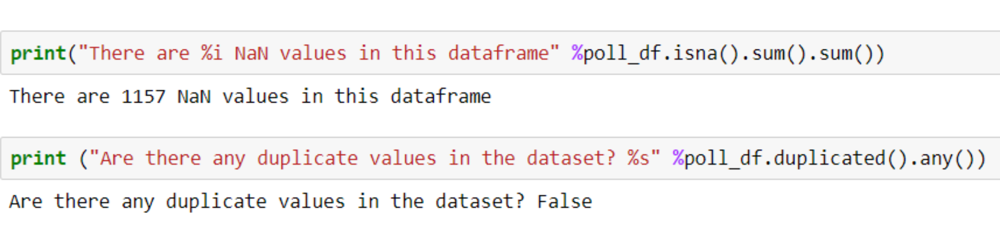

2012 American Election
Data from the 2012 pollsters were analysed
to understand partecipants preferences for presidential election.
For this project I have used data from HuffPost Pollster website and they can be directly be downloaded here.
Data Preview
Observations
- The data has 586 rows and 17 columns
- The data contains 1157 NaN values
- There are no duplicate rows
- The entire column for Question Text produced NaN
- Some partecipants were undecided or opted for other
Data Dictionary
| Variable | Definition |
|---|---|
| Pollster | Pollster name |
| Start Date | Start of the pollster |
| End Date | End of the pollster |
| Entry Date/Time (ET) | Date and time when the data has been uploaded |
| Numbers of Observations | Number of partecipants in the pollster |
| Population | Type of population who partecipated |
| Mode | Mode of the pollster |
| Obama | How many partecipants were in favour of Obama |
| Romney | How many partecipants were in favour of Romney |
| Undecided | How many partecipants were undecided |
| Other | Other parameters included in the pollster |
| Pollster URL | Pollster URL link |
| Source URL | Source URL link |
| Partisan | How many partisans in the pollster |
| Affiliation | Affiliation of the pollster association |
| Question Text | N/A |
| Question Iteration | Number of question iterations |
Affiliations of the polls
Observations
- Most of the polls were neutral, but there were more Democrats affiliations compared to the Republicans' polls
Voters preferences for Obama vs. Romney
Observations
- Preferences for the two candidates are very similar
- Nearly 10% of the participants declared that they were undecided or that they preferred other candidates.
Countplot of voters preferences subdivided by days
To simplify the graphic, I analysed voters' preferences for Obama or Romney by date. If they preferred Obama, the graphic shows a positive number for the day. If the number is negative, they preferred Romney.Observations
- There are no large variations in preferences over the course of 27 days
Voter preferences on the day of the pollsters and public debates
2012 American public debates:-03 October 2012
-11 October 2012
-22 October 2012
Observations
- After the first debate, the public was in favour of Romney by about 3%.
- After the second and third debates the public didn't express particulant preference.
Conclusion
The pollsters showed equal preferences between the two candidates through the pre-election period. It comes as no surprise that at the 2012 American election Obama won with a majority of just 51%.Back to Home